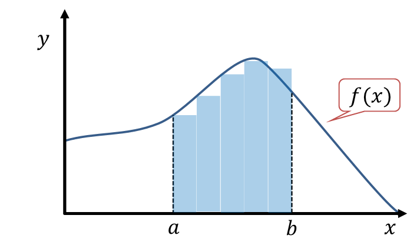

カルマンフィルタの概要
カルマンフィルタとは
カルマンフィルタとは
複数の誤差を含む観測値を統合して、対象の状態を推定する手法である。
例：ドローンのロール角度推定
使用するセンサの特徴
1. ジャイロセンサ（角速度計）
角度を直接求めることはできないセンサ。
- 原理：ジャイロセンサで取得できる角速度 ω を積分することでロール角 ϕ を求める。
- 図では f(x)=ω がジャイロセンサの角速度を示す。
- 積分した面積 F(x) がロール角 ϕ に相当する。

図出典：『積分とは — 数学ノート（統計学で使う数学）』, ベルカーブ研究所（bellcurve.jp）
出典URL: https://bellcurve.jp/statistics/course/10188.html
- メリット：応答が速い。
- デメリット：時間とともにドリフト誤差が蓄積する。
2. 加速度計
角度を直接求めることができるセンサ。
- 原理：重力加速度から静的なロール角を算出する。
- メリット：ドリフトがなく、長期間での安定性が高い。
- デメリット：ドローンが動くと加速度の影響でノイズが大きくなる。
カルマンフィルタの動作原理
ステップ1：予測（ジャイロセンサによる角度推定）
ジャイロの角速度を積分してロール角を予測する。
ϕb=ϕa+i=a∑b−1ωiΔt
パラメータの説明：
- ϕb：区間 a から b まで積分（総和）したロール角
- ϕa：区間 a 時点のロール角（初期値）
- ωi：区間 i（i=a から b−1）でジャイロで測定した角速度
- Δt：サンプリング時間（各区間の幅）
ステップ2：観測（加速度計によるロール角測定）
加速度計で重力方向を測定し、機体のロール角 ϕacc を計算する。
※詳細な導出は省略する。
ステップ3：統合（予測値と観測値の融合）
イノベーション（予測値と観測値の差）を計算する：
yk=ϕacc−ϕb
2つのデータを用いて推定値を計算する：
ϕk∣k=ϕb+Kk⋅yk
ここで、カルマンゲイン Kk は予測値をどれだけ補正するかを決めるパラメータである。
- Kk が大きいほど観測値（加速度計）を重視する
- Kk が小さいほど予測値（ジャイロ）を重視する
カルマンゲインの調整
カルマンゲインは、基本的にはセンサのノイズの共分散行列をもとに調整される。
ノイズの大きさをパラメータとして設定することで、カルマンゲインの値が変化し、推定の特性が変わる。
調整の仕組み
カルマンゲイン調整のポイント
- 加速度計のウェイト（重み）を大きくすると、短期的な応答性が向上する。
しかし、加速度計のノイズや外乱の影響を受けやすくなり、長期的なドリフトが大きくなる可能性がある。
- 加速度計のウェイトを小さくし、ジャイロセンサの予測値を重視すると、短期的なノイズには強くなるが、ジャイロ特有のドリフトが蓄積しやすくなる。
バランス調整が重要：
このバランスを適切に調整することで、ジャイロの長期ドリフトと加速度計の短期ノイズを相互に補正し、両方の利点を活かした推定が可能になる。
参考文献